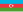

List of countries by percentage of population living in poverty
{kind=link}
{kind=link}
This is a list of countries by percentage of population living in poverty, as recorded by the World Bank and Our World in Data.
Methodology
[edit]Poverty is about not having enough money to meet basic needs including food, clothing and shelter.[3] [4] There are many working definitions of "poverty", with considerable debate on the most accurate definition of the term.
Lack of income security, economic stability and the predictability of one's continued means to meet basic needs all serve as absolute indicators of poverty. Poverty may therefore also be defined as the economic condition of lacking predictable and stable means of meeting basic life needs.
The first table lists countries by the percentage of their population with an income of less than $2.15 (the extreme poverty line), $3.65 and $6.85 US dollars a day in 2017 international (PPP) prices. The data is from the most recent year available from the World Bank API.[1][5][6]
As differences in price levels across the world evolve, the global poverty line has to be periodically updated to reflect these changes. The World Bank updated the global poverty lines in September 2022. The decision follows the release in 2020 of new purchasing power parities (PPPs)—the main data used to convert different currencies into a common, comparable unit and account for price differences across countries. The new extreme poverty line of $2.15 per person per day, which replaces the $1.90 poverty line, is based on 2017 PPPs.[7] This means that anyone living on less than $2.15 a day is considered to be living in extreme poverty. About 648 million people globally were in this situation in 2019.[7]
The second table lists countries by the percentage of the population living below the national poverty line—the poverty line deemed appropriate for a country by its authorities. National estimates are based on population-weighted subgroup estimates from household surveys.[2]
Definitions of the poverty line vary considerably among nations. For example, rich nations generally employ more generous standards of poverty than poor nations. Even among rich nations, the standards differ greatly. Thus, the numbers are not comparable among countries. Even when nations do use the same method, some issues may remain.[8]
Only countries for which sourced data is available are listed. Data for some countries, including Libya and Saudi Arabia, remains unavailable. It was usually accepted that over one third (33.3%) of the population in Libya and Saudi Arabia were living in the previous decade below the poverty line.[9][10]
Percentage of population living on less than $2.15, $3.65 and $6.85 a day
[edit]Percentage of population (including non-citizens) living on less than $2.15, $3.65 and $6.85 a day in 2017 international (PPP) dollars as per the World Bank and Our World in Data.[1][5][6][2] Sorting is by country code.
| Country | $2.15 | $3.65 | $6.85 | Year |
|---|---|---|---|---|
| World | 9.0% | 22.7% | 45.5% | 2022 |
| N/A | ||||
| N/A | ||||
| 31.1% | 52.9% | 78.0% | 2018 | |
| 0% | 1.5% | 13.7% | 2020 | |
| N/A | ||||
| 0% | 0% | 0.4% | 2018 | |
| 0.6% | 2.5% | 10.9% | 2022 | |
| 0.8% | 10.0% | 51.3% | 2022 | |
| N/A | ||||
| 0.5% | 0.7% | 1.0% | 2018 | |
| 0.5% | 0.5% | 1.1% | 2021 | |
| 0% | 0.3% | 31.3% | 2005 | |
| 62.1% | 86.2% | 96.8% | 2020 | |
| 0% | 0.1% | 0.2% | 2021 | |
| 12.7% | 43.4% | 81.4% | 2021 | |
| 25.3% | 60.7% | 88.1% | 2021 | |
| 5.0% | 30.0% | 74.1% | 2022 | |
| 0.7% | 2.0% | 5.8% | 2021 | |
| N/A | ||||
| N/A | ||||
| 0.1% | 0.8% | 5.8% | 2011 | |
| 0% | 0.1% | 1.3% | 2020 | |
| 19.6% | 39.1% | 66.8% | 1999 | |
| N/A | ||||
| 2.0% | 5.4% | 15.2% | 2021 | |
| 3.5% | 8.4% | 23.5% | 2022 | |
| N/A | ||||
| N/A | ||||
| 0% | 0.5% | 8.4% | 2022 | |
| 15.4% | 38.0% | 63.5% | 2015 | |
| 65.7% | 85.8% | 96.2% | 2021 | |
| 0.2% | 0.5% | 0.7% | 2019 | |
| 0% | 0.1% | 0.1% | 2020 | |
| N/A | ||||
| 0.4% | 0.9% | 4.7% | 2022 | |
| 0.1% | 2.0% | 24.7% | 2020 | |
| 9.7% | 38.4% | 76.4% | 2021 | |
| 23.0% | 46.7% | 76.0% | 2021 | |
| 78.9% | 92.1% | 97.7% | 2020 | |
| 35.4% | 59.1% | 83.5% | 2011 | |
| 6.0% | 14.0% | 34.8% | 2022 | |
| 18.6% | 39.5% | 68.6% | 2014 | |
| 4.6% | 19.3% | 50.9% | 2015 | |
| 0.9% | 3.3% | 14.1% | 2022 | |
| N/A | ||||
| N/A | ||||
| N/A | ||||
| 0% | 0.1% | 0.1% | 2021 | |
| 0.1% | 0.1% | 0.3% | 2021 | |
| 0% | 0.2% | 0.2% | 2019 | |
| 19.1% | 43.8% | 78.5% | 2017 | |
| N/A | ||||
| 0.2% | 0.2% | 0.3% | 2021 | |
| 0.8% | 4.0% | 21.5% | 2022 | |
| 0.5% | 4.0% | 36.6% | 2011 | |
| 3.2% | 9.5% | 29.9% | 2022 | |
| 1.5% | 17.6% | 68.8% | 2019 | |
| N/A | ||||
| 0.6% | 0.9% | 1.9% | 2021 | |
| 0.3% | 0.4% | 0.7% | 2021 | |
| 27.0% | 65.0% | 90.9% | 2015 | |
| 0% | 0% | 0.1% | 2021 | |
| 1.3% | 12.4% | 52.6% | 2019 | |
| 0.1% | 0.2% | 0.5% | 2021 | |
| N/A | ||||
| 16.0% | 40.8% | 74.9% | 2013 | |
| 2.5% | 8.1% | 31.2% | 2017 | |
| 0.2% | 0.5% | 0.7% | 2021 | |
| 5.5% | 19.1% | 55.4% | 2021 | |
| 25.2% | 48.8% | 78.5% | 2016 | |
| N/A | ||||
| 13.8% | 46.6% | 86.8% | 2018 | |
| 17.2% | 47.0% | 80.6% | 2020 | |
| 26.0% | 60.2% | 89.1% | 2021 | |
| N/A | ||||
| 0.6% | 1.1% | 2.9% | 2021 | |
| 0.3% | 1.3% | 13.8% | 2018 | |
| N/A | ||||
| 9.5% | 25.9% | 55.4% | 2014 | |
| N/A | ||||
| 11.9% | 24.9% | 56.6% | 1998 | |
| N/A | ||||
| 12.7% | 26.4% | 49.5% | 2019 | |
| 0.3% | 0.4% | 1.8% | 2021 | |
| 29.2% | 58.0% | 85.8% | 2012 | |
| 0.4% | 0.8% | 2.2% | 2021 | |
| 1.9% | 18.1% | 58.8% | 2023 | |
| N/A | ||||
| 12.9% | 44.1% | 81.8% | 2022 | |
| 0.1% | 0.1% | 0.3% | 2021 | |
| 0.5% | 3.8% | 21.9% | 2022 | |
| 0.1% | 2.4% | 24.7% | 2012 | |
| 0% | 0% | 0% | 2017 | |
| 0.2% | 1.0% | 3.5% | 2021 | |
| 0.8% | 1.0% | 1.7% | 2021 | |
| 0.3% | 2.4% | 13.9% | 2021 | |
| 0% | 0.4% | 8.2% | 2010 | |
| 0.7% | 0.9% | 1.4% | 2013 | |
| 0% | 0.3% | 10.6% | 2021 | |
| 36.1% | 70.1% | 91.3% | 2021 | |
| 0.7% | 12.5% | 62.2% | 2021 | |
| N/A | ||||
| 1.7% | 19.5% | 68.9% | 2019 | |
| N/A | ||||
| 0.2% | 0.5% | 1.2% | 2016 | |
| N/A | ||||
| 7.1% | 32.5% | 70.5% | 2018 | |
| 0% | 0.1% | 1.7% | 2011 | |
| 27.6% | 60.6% | 88.9% | 2016 | |
| N/A | ||||
| 0.1% | 0.6% | 8.4% | 2015 | |
| N/A | ||||
| 1.0% | 11.3% | 49.3% | 2019 | |
| 32.4% | 54.7% | 81.0% | 2017 | |
| 0.3% | 0.4% | 1.2% | 2021 | |
| 0.1% | 0.1% | 0.3% | 2021 | |
| 0.4% | 0.7% | 2.1% | 2021 | |
| N/A | ||||
| N/A | ||||
| 1.4% | 9.8% | 42.1% | 2013 | |
| N/A | ||||
| 0% | 0.3% | 14.4% | 2021 | |
| 80.7% | 92.4% | 98.2% | 2012 | |
| 0% | 0% | 3.9% | 2019 | |
| 1.2% | 4.7% | 21.8% | 2022 | |
| 0.9% | 6.1% | 31.5% | 2019 | |
| 2.7% | 7.5% | 19.0% | 2019 | |
| 20.8% | 56.1% | 85.9% | 2021 | |
| 0.3% | 0.7% | 0.8% | 2020 | |
| 2.0% | 19.6% | 68.2% | 2017 | |
| 2.0% | 3.7% | 12.2% | 2021 | |
| 0.2% | 2.4% | 22.1% | 2022 | |
| N/A | ||||
| 74.5% | 88.6% | 96.1% | 2019 | |
| 5.4% | 25.8% | 68.0% | 2019 | |
| 0.1% | 1.8% | 13.5% | 2017 | |
| 70.1% | 89.1% | 97.3% | 2019 | |
| 0% | 0.1% | 2.3% | 2021 | |
| 15.6% | 33.3% | 57.3% | 2015 | |
| N/A | ||||
| 50.6% | 83.1% | 96.3% | 2021 | |
| 30.9% | 63.5% | 90.8% | 2018 | |
| 3.9% | 14.4% | 42.1% | 2014 | |
| 0.1% | 0.1% | 0.3% | 2021 | |
| 0.2% | 0.3% | 0.5% | 2019 | |
| 8.2% | 40.0% | 80.4% | 2010 | |
| 1.7% | 20.9% | 61.7% | 2012 | |
| N/A | ||||
| N/A | ||||
| 4.9% | 39.8% | 84.5% | 2018 | |
| 1.3% | 4.4% | 12.9% | 2023 | |
| 2.7% | 9.5% | 32.2% | 2022 | |
| 3.0% | 17.8% | 55.3% | 2021 | |
| N/A | ||||
| 39.7% | 67.7% | 90.2% | 2009 | |
| 0.1% | 0.2% | 0.9% | 2021 | |
| N/A | ||||
| N/A | ||||
| 0.2% | 0.4% | 1.7% | 2021 | |
| 1.3% | 5.6% | 19.9% | 2022 | |
| 0.5% | 3.1% | 20.5% | 2016 | |
| N/A | ||||
| N/A | ||||
| 1.8% | 3.0% | 7.1% | 2021 | |
| 0% | 0.3% | 4.1% | 2020 | |
| 52.0% | 78.0% | 92.2% | 2016 | |
| N/A | ||||
| 15.3% | 49.7% | 86.2% | 2014 | |
| 9.9% | 36.3% | 75.6% | 2021 | |
| N/A | ||||
| 26.6% | 61.0% | 88.5% | 2012 | |
| 26.1% | 64.3% | 89.9% | 2018 | |
| 3.4% | 8.6% | 27.5% | 2022 | |
| N/A | ||||
| N/A | ||||
| 1.2% | 2.5% | 7.5% | 2021 | |
| 67.3% | 86.5% | 96.6% | 2016 | |
| 15.7% | 45.0% | 79.7% | 2017 | |
| 1.1% | 4.2% | 17.5% | 2022 | |
| 0.1% | 0.7% | 2.4% | 2021 | |
| 0% | 0% | 0.1% | 2021 | |
| 0.6% | 0.8% | 1.4% | 2021 | |
| 36.1% | 58.0% | 78.1% | 2016 | |
| N/A | ||||
| 0.5% | 1.2% | 6.7% | 2018 | |
| 24.8% | 67.0% | 96.0% | 2022 | |
| N/A | ||||
| 30.8% | 62.8% | 88.8% | 2022 | |
| 26.6% | 58.8% | 86.8% | 2021 | |
| 0% | 0.6% | 12.2% | 2021 | |
| 6.1% | 25.7% | 66.4% | 2015 | |
| 43.1% | 71.1% | 91.3% | 1998 | |
| 24.4% | 69.2% | 94.6% | 2014 | |
| 0% | 1.6% | 21.5% | 2021 | |
| 2.1% | 9.4% | 30.2% | 1992 | |
| 0.3% | 2.0% | 16.2% | 2021 | |
| 0.4% | 1.4% | 7.6% | 2021 | |
| 3.6% | 19.6% | 56.6% | 2010 | |
| 0% | 0% | 0.3% | 2021 | |
| 44.9% | 74.3% | 92.3% | 2018 | |
| 42.1% | 71.8% | 91.1% | 2019 | |
| 0% | 0.2% | 7.1% | 2020 | |
| 0.2% | 0.8% | 6.4% | 2022 | |
| 0.2% | 0.5% | 1.0% | 2021 | |
| 2.3% | 5.0% | 17.3% | 2022 | |
| N/A | ||||
| 7.1% | 15.5% | 38.8% | 2006 | |
| N/A | ||||
| N/A | ||||
| 1.0% | 4.2% | 19.7% | 2022 | |
| 10.0% | 34.9% | 76.1% | 2019 | |
| 1.2% | 10.5% | 43.3% | 2013 | |
| 0.4% | 4.2% | 34.2% | 2017 | |
| 19.8% | 54.4% | 85.4% | 2014 | |
| 20.5% | 40.0% | 61.6% | 2014 | |
| 64.3% | 81.0% | 93.2% | 2022 | |
| 39.8% | 64.5% | 85.0% | 2019 | |
Percent of population living below national poverty line
[edit]This section needs to be updated. (May 2024) |
The percentage of the population living below national poverty line (%) – poverty line deemed appropriate for a country by its authorities (however definitions of the poverty line vary considerably among nations). Sorting is by country code.
| Country | World Bank[2][11] | Year |
|---|---|---|
| N/A | ||
| 54.5% | 2016 | |
| 32.3% | 2018 | |
| 22% | 2020 | |
| N/A | ||
| N/A | ||
| 39.2% | 2022 | |
| 24.8% | 2022 | |
| N/A | ||
| 13.4% | 2020 | |
| 14.8% | 2021 | |
|  Azerbaijan | 6% | 2012 |
| Burundi | 64.9% | 2013 |
| 12.3% | 2022 | |
| 38.5% | 2019 | |
| 43.2% | 2021 | |
| 18.7% | 2022 | |
| 20.6% | 2022 | |
| N/A | ||
| N/A | ||
| 16.9% | 2015 | |
| 4.8% | 2020 | |
| N/A | ||
| N/A | ||
| 39% | 2020 | |
| N/A | ||
| N/A | ||
| N/A | ||
| 12.4% | 2022 | |
| 16.1% | 2015 | |
| 68.8% | 2021 | |
| N/A | ||
| 14.7% | 2020 | |
| N/A | ||
| 10.8% | 2020 | |
| 0% | 2020 | |
| 37.5% | 2021 | |
| 37.5% | 2014 | |
| 63.9% | 2012 | |
| 40.9% | 2011 | |
| 36.6% | 2022 | |
| 42.4% | 2013 | |
| 35.2% | 2015 | |
| 25.5% | 2022 | |
| N/A | ||
| N/A | ||
| N/A | ||
| 13.9% | 2021 | |
| 10.2% | 2021 | |
| 14.8% | 2021 | |
| 21.1% | 2017 | |
| N/A | ||
| 12.4% | 2021 | |
| 23.9% | 2021 | |
| 5.5% | 2011 | |
| 25.2% | 2022 | |
| 29.7% | 2019 | |
| 69% | 1993 | |
| 20.2% | 2022 | |
| 22.5% | 2022 | |
| 23.5% | 2015 | |
| 12.2% | 2022 | |
| 24.1% | 2019 | |
| 15.6% | 2021 | |
| N/A | ||
| 41.2% | 2013 | |
| 33.4% | 2017 | |
| 18.6% | 2017 | |
| 15.6% | 2022 | |
| 23.4% | 2016 | |
| N/A | ||
| 43.7% | 2018 | |
| 53.4% | 2020 | |
| 47.7% | 2018 | |
| 76.8% | 2006 | |
| 18.8% | 2021 | |
| 25.% | 2018 | |
| N/A | ||
| 59.3% | 2014 | |
| N/A | ||
| N/A | ||
| N/A | ||
| 48% | 2019 | |
| 18% | 2021 | |
| 58.5% | 2012 | |
| 12.1% | 2021 | |
| 9.4% | 2023 | |
| N/A | ||
| 21.9% | 2011 | |
| 14% | 2021 | |
| N/A | ||
| 18.9% | 2012 | |
| 8.8% | 2017 | |
| N/A | ||
| 20.1% | 2021 | |
| 19.9% | 2012 | |
| 15.7% | 2018 | |
| N/A | ||
| 5.2% | 2022 | |
| 36.1% | 2015 | |
| 33.3% | 2021 | |
| 17.7% | 2012 | |
| 21.9% | 2019 | |
| N/A | ||
| N/A | ||
| N/A | ||
| 18.3% | 2018 | |
| 27.4% | 2011 | |
| 50.9% | 2016 | |
| N/A | ||
| 25% | 2016 | |
| N/A | ||
| 14.3% | 2019 | |
| 49.7% | 2017 | |
| 20.9% | 2021 | |
| 17.4% | 2021 | |
| 22.5% | 2021 | |
| N/A | ||
| N/A | ||
| 4.8% | 2013 | |
| N/A | ||
| 31.1% | 2022 | |
| 70.7% | 2012 | |
| 5.4% | 2019 | |
| 36.3% | 2022 | |
| 7.2% | 2019 | |
| 21.8% | 2019 | |
| 44.6% | 2021 | |
| 16.7% | 2021 | |
| 24.8% | 2017 | |
| 21.2% | 2020 | |
| 27.8% | 2020 | |
| N/A | ||
| 46.1% | 2014 | |
| 31.8% | 2019 | |
| 10.3% | 2017 | |
| 50.7% | 2019 | |
| 6.2% | 2021 | |
| Namibia | 17.4% | 2015 |
| N/A | ||
| 40.8% | 2018 | |
| 40.1% | 2018 | |
| 24.9% | 2016 | |
| 14.5% | 2021 | |
| 12.2% | 2021 | |
| 25.2% | 2010 | |
| 16.8% | 2012 | |
| N/A | ||
| N/A | ||
| 21.9% | 2018 | |
| 21.5% | 2019 | |
| 27.5% | 2022 | |
| 18.1% | 2021 | |
| 24.9% | 2006 | |
| 39.9% | 2009 | |
| 11.8% | 2022 | |
| N/A | ||
| N/A | ||
| 16.4% | 2021 | |
| 24.7% | 2022 | |
| 29.2% | 2016 | |
| N/A | ||
| N/A | ||
| 21.2% | 2021 | |
| 11% | 2021 | |
| 38.2% | 2016 | |
| N/A | ||
| 46.5% | 2009 | |
| 46.7% | 2011 | |
| N/A | ||
| 12.7% | 2012 | |
| 56.8% | 2018 | |
| 26.6% | 2022 | |
| N/A | ||
| 54.4% | 2022 | |
| 21.2% | 2020 | |
| 82.3% | 2016 | |
| 55.5% | 2017 | |
| N/A | ||
| 13.7% | 2021 | |
| 12.7% | 2022 | |
| 16.1% | 2021 | |
| 58.9% | 2016 | |
| N/A | ||
| 25.3% | 2018 | |
| 35.2% | 2007 | |
| N/A | ||
| 42.3% | 2018 | |
| 45.5% | 2018 | |
| 6.3% | 2021 | |
| 22.5% | 2022 | |
| 58% | 1998 | |
| 41.8% | 2014 | |
| 20.6% | 2021 | |
| N/A | ||
| 16.6% | 2021 | |
| 14.4% | 2020 | |
| 26.3% | 2010 | |
| 26.4% | 2018 | |
| 20.3% | 2019 | |
| 1.6% | 2020 | |
| 9.9% | 2022 | |
| N/A | ||
| 14.1% | 2013 | |
| N/A | ||
| 33.1% | 2015 | |
| N/A | ||
| N/A | ||
| 4.8% | 2020 | |
| 15.9% | 2020 | |
| 21.9% | 2018 | |
| 17.6% | 2015 | |
| 48.6% | 2014 | |
| 55.5% | 2014 | |
| 60% | 2022 | |
| 38.3% | 2019 | |
See also
[edit]- List of countries by Human Development Index
- List of countries by share of income of the richest one percent
- List of sovereign states by Official Development Assistance received
- List of countries by minimum wage
- List of countries by income equality
- Economic inequality
- Income distribution
- International inequality
References
[edit]- ^ a b c "Poverty headcount ratio at $2.15 a day (2017 PPP) (% of population)". World Bank. Retrieved 28 October 2023.
- ^ a b c d "Poverty headcount ratio at national poverty lines (% of population)". The World Bank IBRD-IDA. Retrieved 10 August 2024.
- ^ Government of New Brunswick, Canada (26 October 2010). "What is poverty? - Economic and Social Inclusion Corporation". www2.gnb.ca. Retrieved 16 August 2024.
- ^ "What Is Poverty? Meaning, Causes, and How To Measure". Investopedia. Retrieved 11 July 2024.
- ^ a b "Poverty headcount ratio at $3.65 a day (2017 PPP) (% of population)". World Bank. Retrieved 28 October 2023.
- ^ a b "Poverty headcount ratio at $6.85 a day (2017 PPP) (% of population)". World Bank. Retrieved 28 October 2023.
- ^ a b World Bank. "Fact Sheet: An Adjustment to Global Poverty Lines". The World Bank IBRD-IDA. Retrieved 28 October 2023.
- ^ ""Inequality watch". Archived from the original on 30 April 2016. Retrieved 10 January 2014." Eurostat 2010
- ^ "Libya Economy 2017, CIA World Factbook". www.theodora.com.
- ^ One third of the Saudi Arabia's population lives under the poverty line Archived 2016-05-09 at the Wayback Machine, 5 August 2013
- ^ "Share of population living below national poverty lines, 2000 to 2022". Our World in Data. Retrieved 28 October 2023.
External links
[edit]- World Poverty Clock World Poverty Clock from Global Data Lab
- Global Distribution of Poverty Global poverty datasets and map collection
- Population below poverty line: Countries Compared
Economic classification of countries | |||||
|---|---|---|---|---|---|
| Three/Four-World Model | |||||
| Gross domestic product (GDP) |
| ||||
| Gross national income (GNI) | |||||
| Wages | |||||
| Wealth | |||||
| Other national accounts | |||||
| Human development | |||||
| Digital divide | |||||
| Net international investment position (NIIP) | |||||